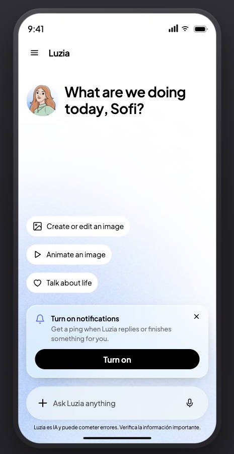
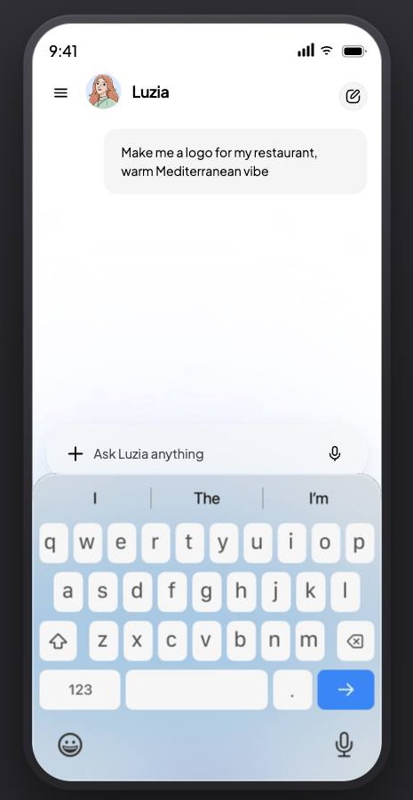
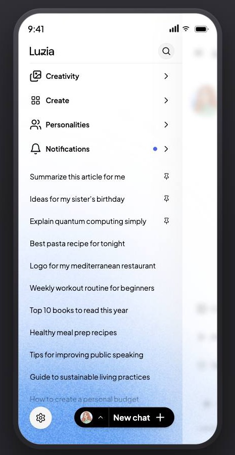
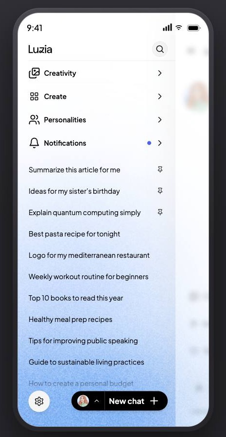

A direct, personal welcome makes the conversation the product. Navigation, character choice and tools stay close at hand without competing for the first tap.
Four core states Light and dark modes

One clear next stepFamiliar chat, less frictionDesigned around the deviceRoom for the conversationOne clear next step
01 / The design idea
Make chat the starting point.
A short welcome gives the screen a human voice. Three suggested actions show what Luzia can help with, while the composer remains the clearest invitation. Secondary features appear when the person asks for them.
Contribution
Product definition, UX and interaction design
Platform focus
Android first · small-device baseline
Modes
Light and dark · responsive states
01
Welcome in one thought.
Replace the long character-specific greeting with a concise prompt. Use two welcome states: show the Luzia mark after the idle window and on arrival from onboarding; keep it out of a fresh thread opened from the drawer or FAB.
02
Let the composer carry the next action.
Keep Plus and the microphone in a compact, single-row composer. Remove the tools chips. In the V1 exploration, carry idle, listening and generating in the gradient rather than swapping the whole control.
03
Put prompts where they help.
Move icebreakers to the bottom of the chat. Hide them while the keyboard is open or the person has started typing. On smaller screens, define how many fit instead of allowing them to crowd out the conversation.
04
Use the drawer for destinations.
Open the thread list from the side drawer; put Visual tools above the conversations. Keep the empty-thread New chat action hidden while it has nothing useful to do.
05
Make character choice legible.
Offer four first-run characters from the FAB, with names beside the portraits. Bring the most-used choice closest to the opening tap; keep the fuller catalogue for a later, measured release.
03 / Selected states
Designed as a flow.
These are captures from the interactive design prototype. The full prototype includes additional states, navigation, visual tools, routines, notifications, settings and both colour modes.
01 · First entranceA useful invitation ↗

02 · In conversationKeyboard state ↗

03 · Find a threadSide drawer ↗

04 · Choose a voiceCharacter picker ↗
A
One surface across light and dark.
The interactive mockup moves through light and dark modes and shows how the welcome, composer, drawer and visual tools respond across the flow.
B
Motion communicates state.
The welcome builds in sequence; the drawer pushes the chat surface; visual tools arrive from blur, then snap between cards. The composer gradient calms as the conversation takes over.
C
Bind colour to its role.
Sixty raw paints across four built sections were mapped to semantic roles. The mockup CSS now references the same tokens; 22 duplicated light/dark pairs became shared rules.
D
Track the remaining system debt.
The avatar disc and nine tints still need tokens. The gradient awaits a published library ramp. These are documented follow-ups, not disguised as finished system work.
05 / Scope boundaries
Separate what shipped from what was explored.
The live mockup covers a broad interaction model, while the experiment's v0 scope was deliberately smaller. This distinction keeps the case honest and makes the release plan easier to follow.
In the v0 mockup
Core experience
Welcome, first-run nudge, chat and keyboard states, drawer, character picker, visual tools, notifications and settings.
Designed in Figma
Onboarding and variants
Six onboarding steps across light and dark: login, date of birth by voice or keypad, confirmation and handover. These were cut from v0 on 10 September with age verification.
Release-gated
Features to revisit
Chat search, routines, favourites and wider character discovery were candidates for later releases, each tied to evidence and risk mitigation.